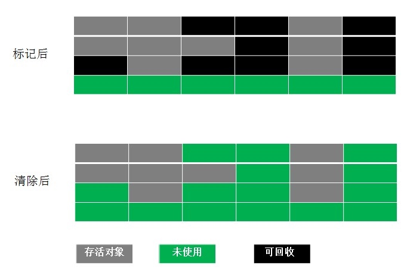

jvm 垃圾回收算法
众所周知，Java的垃圾回收是不需要程序员去手动操控的，而是由JVM去完成。本文介绍JVM进行垃圾回收的各种算法。
1. 如何确定某个对象是垃圾
1.1. 引用计数法
在Java中，引用和对象是有关联的。如果要操作对象则必须用引用进行。因此，很显然一个简单的办法是通过引用计数来判断一个对象是否可以回收。简单说，即一个对象如果没有任何与之关联的引用，则说明对象不太可能再被用到，那么这个对象就是可回收对象。这种方式即是引用计数法。这种方式的问题是无法解决循环引用的问题，举个例子：
public static void main(String[] args){
Object object1=new Object();
Object object2=new Object();
object1.object=object2;
object2.object=object1;
object1=null;
object2=null;
}
显然，在最后，object1和object2的内存块都不能再被访问到了，但他们的引用计数都不为0，这就会使他们永远不会被清除。
1.2. 可达性分析
为了解决引用计数法的循环引用问题，Java使用了可达性分析的方法。通过一系列的“GC roots”对象作为起点搜索。如果在“GC roots”和一个对象之间没有可达路径，则称该对象是不可达的。要注意的是，不可达对象不等价于可回收对象，不可达对象变为可回收对象至少要经过两次标记过程。两次标记后仍然是可回收对象，则将面临回收。
所谓“GC roots”，或者说tracing GC的“根集合”，就是一组必须活跃的引用。例如说，这些引用可能包括：
所有Java线程当前活跃的栈帧里指向GC堆里的对象的引用；换句话说，当前所有正在被调用的方法的引用类型的参数/局部变量/临时值。
VM的一些静态数据结构里指向GC堆里的对象的引用，例如说HotSpot VM里的Universe里有很多这样的引用。
JNI handles，包括global handles和local handles（看情况）
所有当前被加载的Java类（看情况）
Java类的引用类型静态变量（看情况）
Java类的运行时常量池里的引用类型常量（String或Class类型）（看情况）
String常量池（StringTable）里的引用
比较常见的将对象视为可回收对象的原因：
显式地将对象的唯一强引用指向新的对象。
显式地将对象的唯一强引用赋值为Null。
局部引用所指向的对象（如，方法内对象）。
下述代码中，每次循环结束，object都会被视为可回收对象。
void fun() {
.....
for(int i=0;i<10;i++) {
Object obj = new Object();
System.out.println(obj.getClass());
}
}
只有弱引用与其关联的对象
2. 典型的垃圾回收算法
在JVM规范中并没有明确GC的运作方式，各个厂商可以采用不同的方式去实现垃圾回收器。这里讨论几种常见的GC算法。
2.1. 标记-清除算法(Mark-Sweep)
最基础的垃圾回收算法，分为两个阶段，标注和清除。标记阶段标记出所有需要回收的对象，清除阶段回收被标记的对象所占用的空间。如图：

缺点: 该算法最大的问题是内存碎片化严重，后续可能发生大对象不能找到可利用空间的问题。
2.2. 复制算法(Copying)
为了解决Mark-Sweep算法内存碎片化的缺陷而被提出的算法。按内存容量将内存划分为等大小的两块。每次只使用其中一块，当这一块内存满后将尚存活的对象复制到另一块上去，把已使用的内存清掉，如图：
优点: 算法实现简单，内存效率高，不易产生碎片
缺点: 可用内存被压缩到了原本的一半。且存活对象增多的话，Copying算法的效率会大大降低
2.3. 标记-整理算法(Mark-Compact)
结合了以上两个算法，为了避免缺陷而提出。标记阶段和Mark-Sweep算法相同，标记后不是清理对象，而是将存活对象移向内存的一端。然后清除端边界外的对象。如图：
2.4. 分代收集算法(Generational Collection)
新生代--使用Copying算法
老年代--使用Mark-Compact算法
分代收集法是目前大部分JVM所采用的方法，其核心思想是根据对象存活的不同生命周期将内存划分为不同的域，一般情况下将GC堆划分为老生代(Tenured/Old Generation)和新生代(Young Generation)。老生代的特点是每次垃圾回收时只有少量对象需要被回收，新生代的特点是每次垃圾回收时都有大量垃圾需要被回收，因此可以根据不同区域选择不同的算法。
目前大部分JVM的GC对于新生代都采取Copying算法，因为新生代中每次垃圾回收都要回收大部分对象，即要复制的操作比较少，但通常并不是按照1：1来划分新生代。一般将新生代划分为一块较大的Eden空间和两个较小的Survivor空间(From Space, To Space)，每次使用Eden空间和其中的一块Survivor空间，当进行回收时，将该两块空间中还存活的对象复制到另一块Survivor空间中。
而老生代因为每次只回收少量对象，因而采用Mark-Compact算法。
另外，处于方法区的永生代(Permanet Generation)。它用来存储class类，常量，方法描述等。对永生代的回收主要包括废弃常量和无用的类。
对象的内存分配主要在新生代的Eden Space和Survivor Space的From Space(Survivor目前存放对象的那一块)，少数情况会直接分配到老生代。当新生代的Eden Space和From Space空间不足时就会发生一次GC，进行GC后，Eden Space和From Space区的存活对象会被挪到To Space，然后将Eden Space和From Space进行清理。如果To Space无法足够存储某个对象，则将这个对象存储到老生代。在进行GC后，使用的便是Eden Space和To Space了，如此反复循环。当对象在Survivor区躲过一次GC后，其年龄就会+1。默认情况下年龄到达15的对象会被移到老生代中。
3. 典型的垃圾收集器
垃圾收集算法是垃圾收集器的理论基础，而垃圾收集器就是其具体实现。下面介绍HotSpot虚拟机提供的几种垃圾收集器。
3.1. Serial/Serial Old -- 使用Copying算法
最古老的收集器，是一个单线程收集器，用它进行垃圾回收时，必须暂停所有用户线程。Serial是针对新生代的收集器，采用Copying算法；而Serial Old是针对老生代的收集器，采用Mark-Compact算法。优点是简单高效，缺点是需要暂停用户线程。
3.2. ParNew
Seral/Serial Old的多线程版本，使用多个线程进行垃圾收集。
3.3. Parallel Scavenge
新生代的并行收集器，回收期间不需要暂停其他线程，采用Copying算法。该收集器与前两个收集器不同，主要为了达到一个可控的吞吐量。
3.4. Parallel Old
Parallel Scavenge的老生代版本，采用Mark-Compact算法和多线程。
3.5. CMS
Current Mark Sweep收集器是一种以最小回收时间停顿为目标的并发回收器，因而采用Mark-Sweep算法。
3.6. G1
G1(Garbage First)收集器技术的前沿成果，是面向服务端的收集器，能充分利用CPU和多核环境。是一款并行与并发收集器，它能够建立可预测的停顿时间模型。
- 参考文章 Java垃圾回收机制 java的gc为什么要分代？ - RednaxelaFX的回答 - 知乎